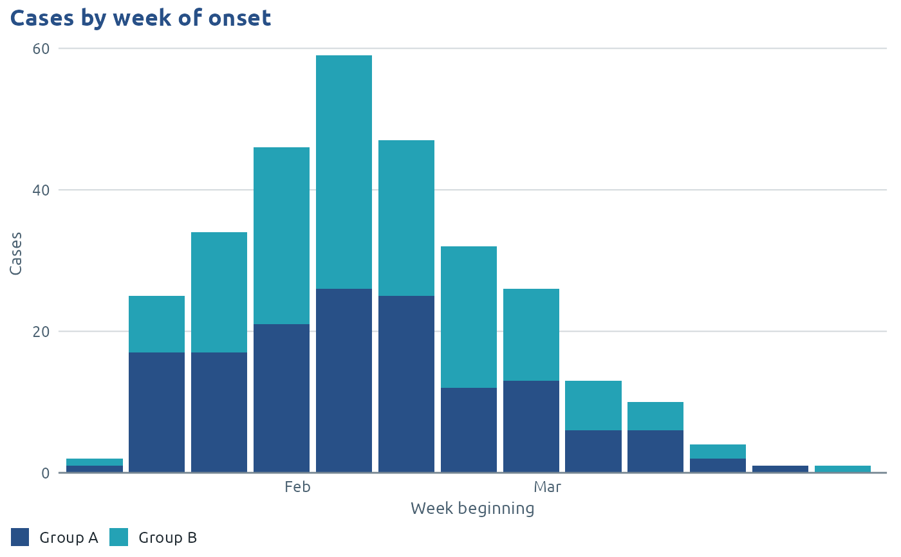
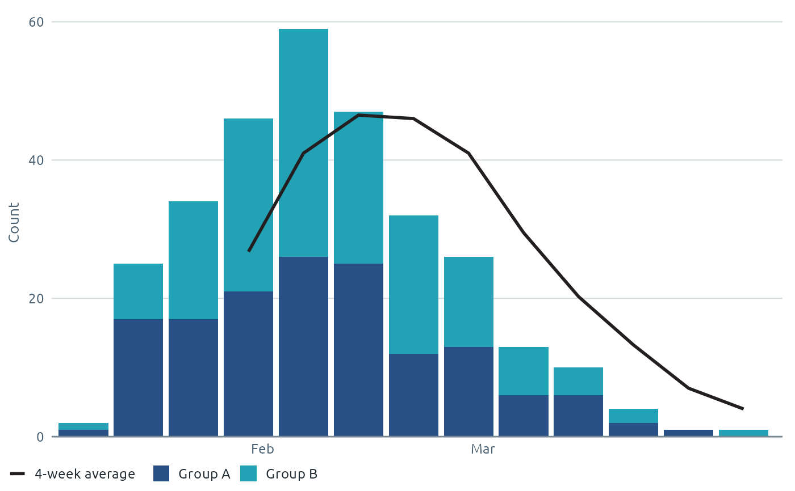

Counts of cases (or any events) by day, week, month, quarter or year, as columns, optionally stacked or side by side by group. Periods with no cases are shown as zero, so the time axis has no gaps.
Usage
phw_epicurve(
data,
date,
group = NULL,
count = NULL,
interval = c("week", "day", "month", "quarter", "year"),
week_start = 1,
position = c("stack", "dodge"),
palette = NULL,
key = NULL,
fill = phw_colours[["navy"]],
date_labels = NULL,
date_breaks = NULL,
range = NULL,
average = NULL,
average_label = NULL,
...
)Arguments
- data
A data frame with one row per case, or with a count column.
- date
The date column, unquoted as in dplyr (
onset). A string ("onset") works too.- group
Optional column to colour and stack by (e.g. age group or organism).
- count
Optional column of counts (for aggregated data).
- interval
"day","week","month","quarter"or"year".- week_start
First day of the week, 1 = Monday (ISO weeks) to 7 = Sunday.
- position
"stack"or"dodge"for grouped columns.- palette, key
Colours for groups, as in
scale_fill_phw_d().keykeeps each group's colour across charts.- fill
Column colour when there is no
group.- date_labels, date_breaks
Passed to
ggplot2::scale_x_date().- range
Optional two dates for the start and end of the axis, e.g. to show a full year even when the first weeks have no cases.
- average
Optional whole number of periods,
k, for a rolling average line. It is the mean of the total count (all groups added together) over the latestkperiods, drawn at the centre of each period's column. The firstk - 1periods have no average and draw nothing.- average_label
Legend text for the average line. Defaults to, for example,
"7-day average"or"4-week average".- ...
Passed to
ggplot2::geom_col().
Value
A ggplot. The counts by period are in $data (columns period,
group and n, plus average when average is set, the same on
every group row of a period).
Examples
set.seed(1)
cases <- data.frame(
onset = as.Date("2025-01-01") + round(rgamma(300, 6, 0.15)),
group = sample(c("Group A", "Group B"), 300, TRUE))
phw_epicurve(cases, onset, group = group) +
ggplot2::labs(title = "Cases by week of onset", x = "Week beginning", y = "Cases")

# A four-week rolling average of the total
phw_epicurve(cases, onset, group = group, average = 4)
